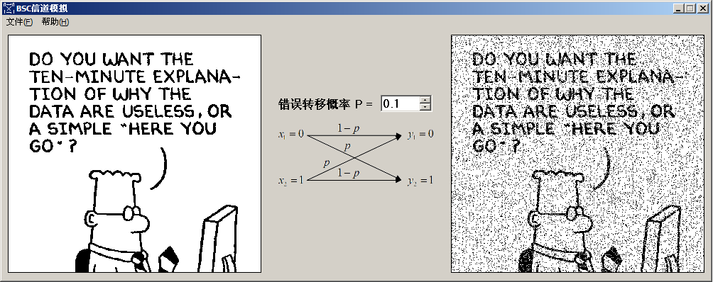

实验四、BSC 信道仿真
1. 实验内容
用 BSC 信道仿真软件理解 BSC 信道中干扰对信道信息传输的影响。
2. 实验环境
- 计算机
- Windows 2000 或以上
- BSC 信道仿真软件
3. 实验目的
掌握和理解 BSC 信道的特征。
4. 实验要求
- 提前预习实验，认真阅读实验原理以及相应的参考书。
- 认真高效的完成实验，实验中服从实验室管理人员以及实验指导老师的管理。
- 认真填写实验报告。
5. 实验原理
略。
6. 实验地址
7. 实验结果
错误转移概率为 0.1 时，BSC 信道干扰情况，请参考下图。
图：BSC 信道仿真实验结果 1，王顶，408542507@qq.com 错误转移概率为 0.8 时，BSC 信道干扰情况，请参考下图。

图：BSC 信道仿真实验结果 2，王顶，408542507@qq.com